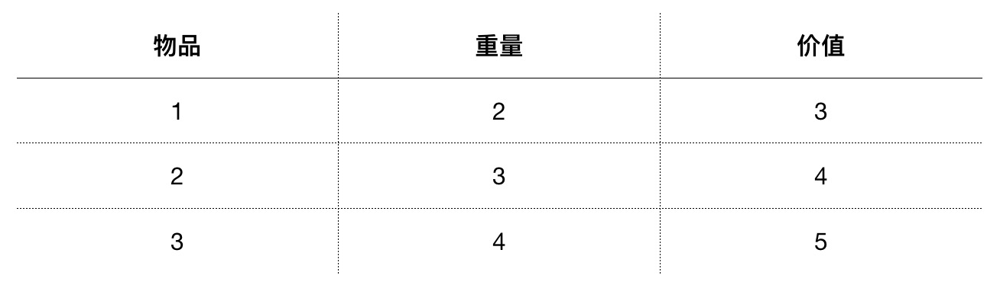

动态规划 （DP）
动态规划（Dynamic Programming）：对一个复杂的问题的求最优解，转为对一系列子问题求最优解的递归过程。
动态规划算法由理查德·贝尔曼 于 1950s 提出。
解决问题的思路：
- 定义子问题
- 计算子问题的最优解，通常需要计算可能的情况然后选出最优解
- 基于下一级子问题的最优解，求解上一级子问题的最优解
- 最后得出原问题最优解
分而治之与动态规划：两者都有分解子问题的过程，但动态规划是将问题分解为相互依赖的子问题，而分而治之是将问题分解为相互独立的子问题。
算法举例
背包问题 （0-1 版本）
考虑一个问题，假设一个背包最大能够携带重量 W 的物品，可以携带物品每件物品的重量和对应的价值都不一样。找出一种组合（每件物品只能用一次）使得整个背包所携带物品价值总和最大。
物品的种类，重量和价值如下表：

问题分解
步骤
1. 计算只有一种物品时，从 0 到 W 重量的最大价值
2. 基于一种物品的结果，计算只有两种物品时 从 0 到 W 重量的最大价值
3. 重复1、2步骤直到所有物品都考了进去得到 从 0 到 W 重量的最大价值
源代码
function findValues(n, capacity, kS) {
let i = n;
let k = capacity;
// console.log('Items that are part of the solution:');
while (i > 0 && k > 0) {
if (kS[i][k] !== kS[i - 1][k]) {
// console.log(
// item ' + i + ' can be part of solution w,v: ' + weights[i - 1] + ',' + values[i - 1]
// );
i--;
k -= kS[i][k];
} else {
i--;
}
}
}
function knapSack(capacity, weights, values, n) {
const kS = [];
for (let i = 0; i <= n; i++) {
kS[i] = [];
}
for (let i = 0; i <= n; i++) {
for (let w = 0; w <= capacity; w++) {
if (i === 0 || w === 0) {
kS[i][w] = 0;
} else if (weights[i - 1] <= w) {
const a = values[i - 1] + kS[i - 1][w - weights[i - 1]];
const b = kS[i - 1][w];
kS[i][w] = a > b ? a : b; // max(a,b)
// console.log(a + ' can be part of the solution');
} else {
kS[i][w] = kS[i - 1][w];
}
}
// console.log(kS[i].join());
}
// extra algorithm to find the items that are part of the solution
findValues(n, capacity, kS);
return kS[n][capacity];
}
function knapSack(capacity, weights, values, n) {
if (n === 0 || capacity === 0) {
return 0;
}
if (weights[n - 1] > capacity) {
return knapSack(capacity, weights, values, n - 1);
}
const a = values[n - 1] + knapSack(capacity - weights[n - 1], weights, values, n - 1);
const b = knapSack(capacity, weights, values, n - 1);
return a > b ? a : b;
}
算法演示
https://algorithm-visualizer.org/dynamic-programming/knapsack-problem